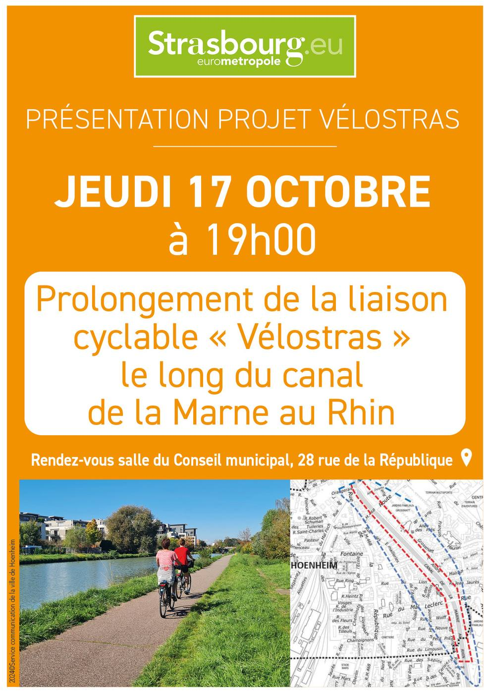

- Cet événement est terminé
Présentation publique du projet Vélostras
17 octobre 2024 à 19 h 00 min - 20 h 00 min
Navigation de l'événement

Présentation publique du projet Vélostras par l’Eurométropole de Strasbourg.
Jeudi 17 octobre à 19h en salle du Conseil municipal, 28 rue de la République à l’arrière de la Mairie.
Cette présentation du projet de prolongement de la liaison cyclable « Vélostras » le long du canal de la Marne au Rhin est ouverte à tous les habitants de Hoenheim.